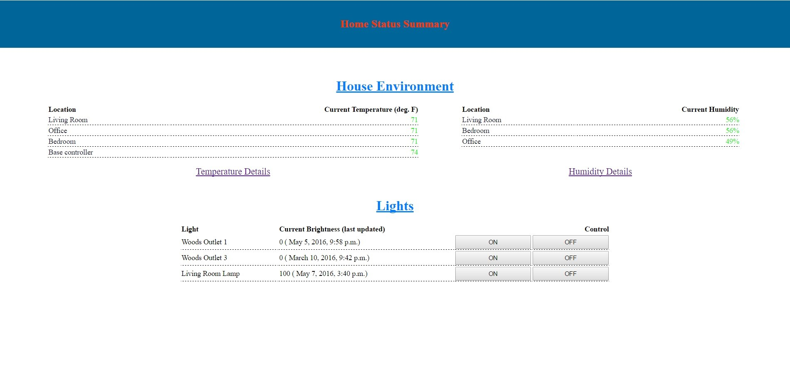

Home Automation Projects V2!
|
Overview I love the idea of home automation, and I wanted to make a system that was easily extensible, and able to potentially interact with lots of different things around the house. My first attempt at some simple home automation did a couple things, but it felt a bit hacked together. This time around, I actually made it a little more modular, and created custom PCBs and enclosures for the devices. It still uses a rasbery pi as the main control hub in conjunction with a PIC like last time. The main difference here, is I've set up a django powered website to host the control site and keep a database of events and statuses for different peripherals. The other main difference is the addition of a zigbee network. I created custom 'remote modules' that connect to the control hub through the zigbee protocol. This was cheaper and lower power than using something like wifi to communicate back to the control hub. Right now the remote modules have rechargeable batteries that will last for a month or so before needing to be recharged. They can collect temperature and humidity in whichever room they're in, but they can be programmed to perform lots of other functions as well. Hardware
The base station consists of a rasberry pi 2 and a second custom PCB that includes a PIC microcontroller, a zigbee radio module, a generic 434MHz radio module, a blueooth module, and
a temperature sensor. All of this sits inside of a basic black project box.
The whole thing is powered through a micro USB cable. That cable is routed straight to the Pi, and the supporting board is powered by the 5V pin on the Pi. The Pi communicates with the PIC through UART, just as before. The PIC either receives commands/data from remote modules via the zigbee radio, or from the Pi which it can then service itself or forward on to the intended recipient. The zigbee module is made by Xbee, and is pretty easy to use. The reason I used the Xbee/Zigbee modules was that I could make really low power remote peripherals, and they would be simpler than if I had to use wifi or something similar. All of the zigbee modules together create a mesh network, so you can use 'router' modules to forward packets to peripherals that may be out of range from the destination radio module. The board also has a bluetooth module on it, but I haven't actually done anything with that yet. Maybe someday...The board also includes a basic temperature sensor to monitor the temperature inside the box. I included the 434MHz radio module because that's what some of my remote control outlets use. I bought these outlets from amazon, and was able to imitate the signals that the remote sends to be able to control the outlets through this system. I have 2 lamps in my apartment hooked up to these outlets that I can control from the website. I've attached the schematics and board file for the control hub below if you're interested in more details.
To go along with the control hub, I also created several (what I'm calling) remote modules. These are small boxes that can communicate with the control hub through the zigbee network
and monitor temperature and humidity wherever they are placed. I'm hoping to add more functionality to them, but for now, they just monitor temperature and humidity in various rooms.
So far I've assembled 3 of them, but I have enough PCBs and parts to make 5 total.
The 2 main features of the remote modules are a temperature/humidity sensor and a FET that can switch some kind of load remotely. I plan to use this FET to switch an IR LED which will control the TVs in my apartment. The remote modules can be powered by a rechargable LiIon battery or a micro USB connection. When in battery mode, the USB port will charge the battery using an integrated charge controller. The battery life is pretty good since the PIC and XBee spend most of their time in sleep mode. They usually last about a month before needing to be recharged. The schematics and board file for the remote module are also attached below. Software
Just like on the little internet controlled robot, the rasberry pi 2 in the control hub is running an ARM version of Arch Linux. Instead of just hosting a normal website on it like last time, I
decided to use a django site that includes an actual database. The main reason was that I wanted to maintain a bunch of information
in a database (like temperature history for example), and Django was a great way to incorporate that and a control website into one. In with the Django code for the database and website,
I have the code that coordinates communication with the PIC on the other PCB and by extension, the remote modules. It can initiate a command to the other board (like turning on lights), or
receive data from the remote modules (like temperature/humidity). The actual django website has 3 main pages right now. One main page that has a summary of all the stuff going on in the house,
and one for temperature and humidity each. The temperature and humidity pages allow you to see history of temperatures in each room. Each room corresponds to data from one remote module. The
data from the modules is stored in the Django database, and displayed as both a graph and table in the website. You can choose how far back in the past you want the graph to display data from.
The code for the PIC on the control hub has to control communication with the remote modules through the XBee as well as communication with the Pi. I have a simple packet format that I'm using for communication between all of these devices. Basically there is a field for the intended destination of the packet, and one for the type of packet. Then depending on the type, the actual payload data takes variable formats. For example, a temperature packet will have a 2 byte number in the payload that can be converted into an accurate temperature, but a light control packet has one byte for the light id, and another for brightness of that light. I've put all of the code in a zip file below, so you can look at it for more details. Code/Schematics for this project |
 | ||||||
|
More Pictures
|
|||||||
{kind=link}
{kind=link}
{kind=link}
{kind=link}
{kind=link}
{kind=link}
{kind=link}
{kind=link}
{kind=link}